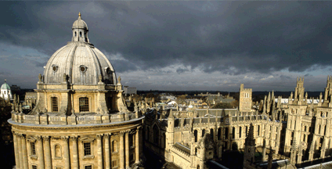

活动介绍
详情>>创新是旅游业发展的生命所在，是旅游业发展的不竭动力。2011年1月18日至19
日，2011年全国旅游工作会议在京召开，政府对“紧紧围绕科学发展这一主题和转变
发展方式这一主线，深入持久地贯彻落实41号文件，不断深化旅游业改革开放，不断
推动旅游业创新发展”做了全面部署，我国新一轮旅游改革创新的大幕已经拉开。
一场实质性的旅游改革不仅需要自上而下的推动，也需要自下而上的强大动力，从而
形成旅游改革的有效机制和良好氛围。
盛典系列活动介绍
第四届旅游信息咨询服务创新发展国际论坛
- 2011旅游文化创意产业创新发展国际论坛
- 2011民族地区旅游业创新发展论坛
- 2011旅游教育培训创新发展国际论坛
- 2011中国旅游创新奖盛典颁奖晚宴
- 韩国旅游信息化考察研讨团
- 北京旅游信息化考察研讨团
- 第六届北京国际文化创意产业博览会观摩团
创新是旅游业发展的生命所在，是旅游业发展的不竭动力。2011年1月18日至19
日，2011年全国旅游工作会议在京召开，政府对“紧紧围绕科学发展这一主题和转变
发展方式这一主线，深入持久地贯彻落实41号文件，不断深化旅游业改革开放，不断
推动旅游业创新发展”做了全面部署，我国新一轮旅游改革创新的大幕已经拉开。
一场实质性的旅游改革不仅需要自上而下的推动，也需要自下而上的强大动力，从而
形成旅游改革的有效机制和良好氛围。【详细】
大会新闻